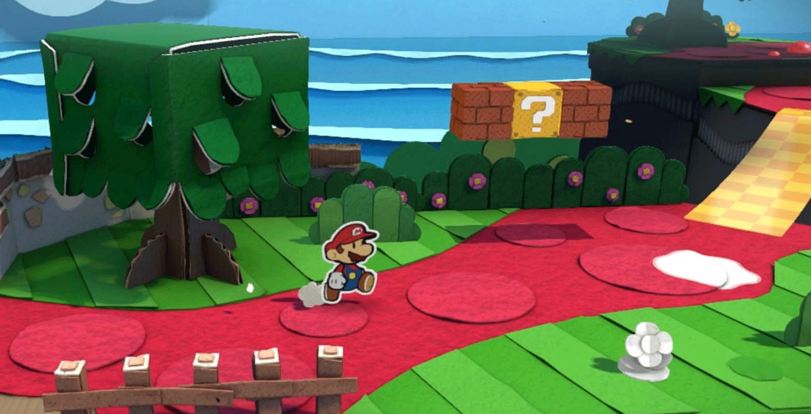
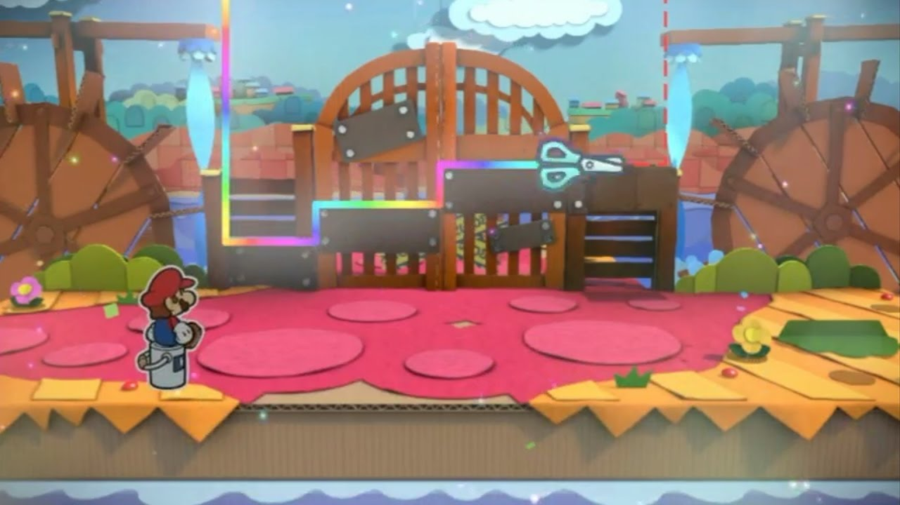
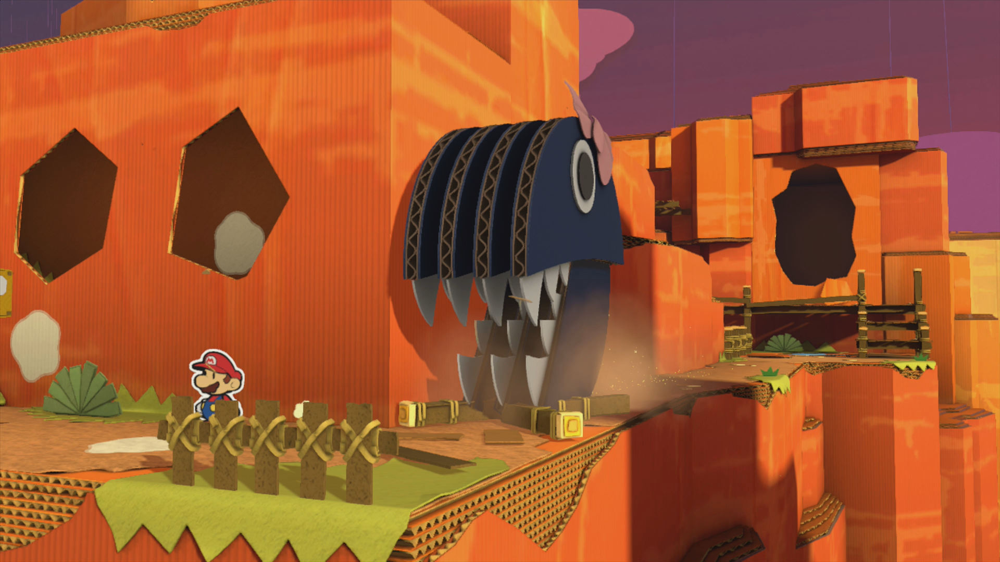
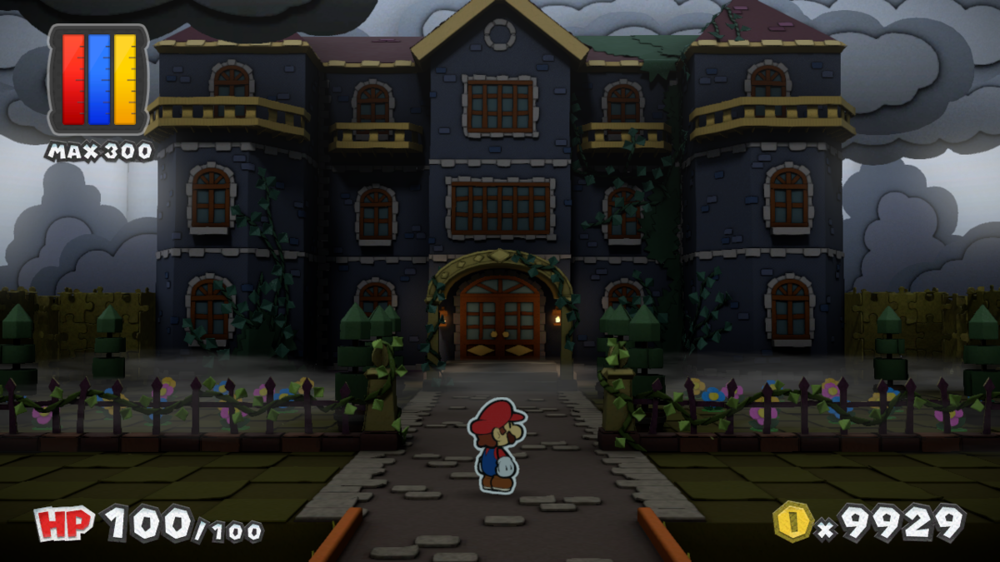
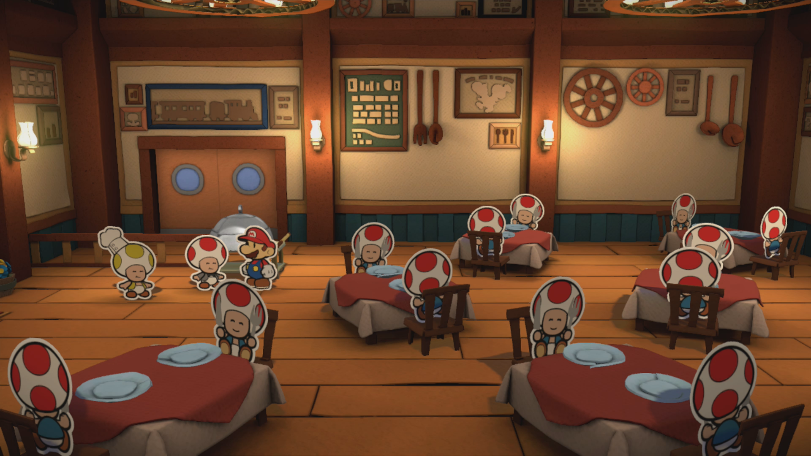
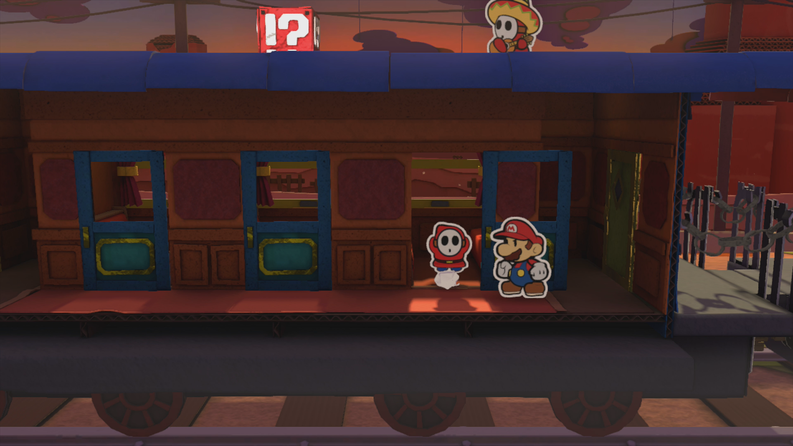
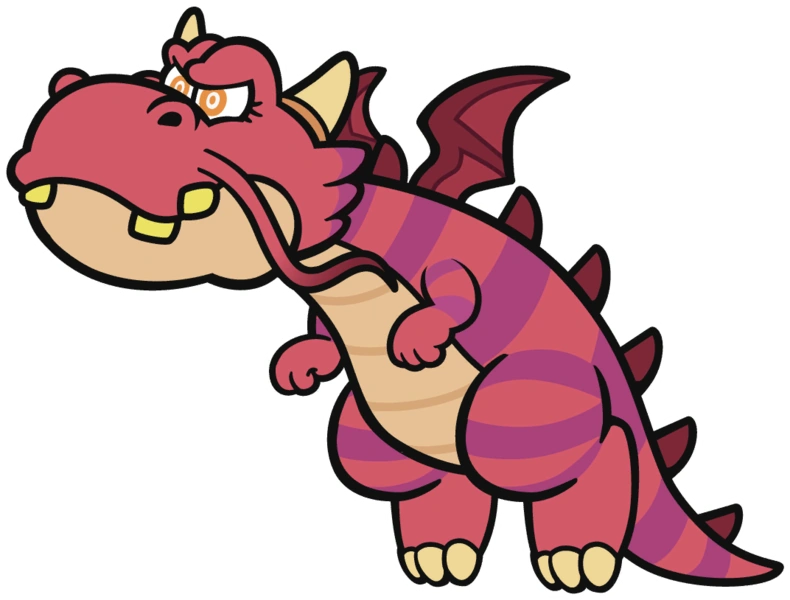
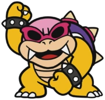

Paper Mario: Color Splash is the worst-performing game in the series. This is due to it being a direct sequel to
Sticker Star, as well as launching on the failed console, the Wii U. Despite its sales numbers, this game is
leaps and bounds ahead of its predecessor in more ways than one but still carries some of its problems along
with it.
Plot
The story begins with Princess Peach visiting Mario's house on a stormy night with a
distressed look on her face. She gives Mario a letter, which, upon unravelling it, turns
out to be a Toad's body drained of all its colour! Though initially shocked by this, Mario
then realized that the toad was stamped with an address to Port Prisma. And
so, Mario, Peach,
and her Toad set sail for Port Prisma to find out what happened to this toad.
Gameplay
Battle System
Paper Mario: Color Splash's battle system is very similar to that of
Sticker Star. Mario
still uses disposable items as attacks, although this time they are cards instead of
stickers. Mario also still defaults to attacking the enemy in the front. Some subtle
differences are that the battle spinner is gone, and Mario can just select three cards for
battle no matter what. Another change is that enemies no longer have numerical
health, and
Mario doesn't do numerical damage. The enemies' health is expressed in terms of how much
color they have left. This takes away from some of the fun for me because I always enjoy
making calculated moves where I deal exactly as much damage as I expect. Whereas with the
lack of numbers, I find myself shooting in the dark with my moves sometimes. Also, Mario
gets to use his paint to paint his colourless cards
however much he wants. The more paint he spends on the card, the more damaging the card will
be. In concept, this sounds like a very engaging and strategic game of give-and-take with
Mario's paint, but in practice, it doesn't end up adding much strategy. Paint is so
plentiful that I never really felt the tradeoff when I painted my cards fully.
In fact, I
like Color Splash's battling less than Sticker Star's. I find the painting of the cards
really slows down the battles, making each battle feel like a slog. I never found myself
skipping battles in Sticker Star, but about halfway through Color Splash, I tried to avoid
as many as I could, simply because of how long they took. Color Splash tried to
give an
incentive to battle, by giving the player Hammer
Scrapsupon
defeating enemies. After
collecting enough Hammer Scraps, Mario's Paint capacity levels up. This is nice, but I never
found it to be an extremely necessary upgrade in most scenarios.
Overworld
This is an area of Sticker Star that I think Color Splash made
great improvements to.
Firstly, the use of the HD graphics of the Wii U really gets to shine here. The vibrancy and
life put into the locales in this game vs. Sticker Star is like night and day. In terms of
gameplay, Color Splash has its new painting mechanic. All over every level,
you will
encounter colourless patches on the floors, walls, and plants. Mario can hit
them with his
paint hammer to give them back their colour and earn some coins
for doing it. This is
extremely engaging to do and never gets old! I love going to a new level and having a
bunch of spots to paint. I also love that it gives the player something to do outside of the
main story, as each level gets a little badge next to it if the player finds and paints
every colourless spot. After I beat the game, I went back and painted every level! Another
aspect of the overworld gameplay that isn't quite as prominent is Color Splash's
Paperization equivalent, called the Cutout technique. With this, Mario is
able to
temporarily cut out part of the level, and either jump on the uncut parts like a 2D
platformer or insert a card of his choice into it to solve a puzzle. The Cutout ability is
not nearly as central as Sticker Star's Paperizing, but it's still a neat mechanic that adds
a nice bit of variety to the gameplay. Things also make a return
from Sticker Star, but
their implementation is much better in this game. There are way fewer Things than in Sticker
Star, making the amount of Things to choose from less overwhelming. It is also much easier
to tell which one is needed because of this. The game also has a hint toad that you can talk
to, free of charge, that tells you which Thing you will need next, making it much less
cumbersome to keep trying over and over until you get the right Thing.
World Map
Just like
Sticker Star, Color Splash uses a world map to connect the areas Mario visits.
However, for some reason, Color Splash's world doesn't feel as disconnected as Sticker
Star's did. Each level that Mario goes to feels like a continuation of the last, and they
fit together well to make a full-fledged chapter, instead of multiple mini-chapters. Color
Splash's world map is also less linear in its design. Throughout the game, Mario may
visit
certain places multiple times, at completely different points in the story. Some areas may
have also changed since that last time he's been there, adding a sense of realism to the
world. I also love the touch of the map becoming more coloured in, and its music getting
more
instruments, as the game goes on. It gives you a sense of pride and accomplishment in your
progress.
Partners
Huey
Huey is a paint bucket who was summoned in Port Prisma after the 6 Big Paint Stars were
taken by Bowser. He starts as a 3D paint bucket until he empties his paint supply to Mario
when Mario first learns about paint. Huey's role in the game is very similar to Kersti's
role
in Sticker Star.
However, Huey is a lot more likeable. He makes funny quips, isn't rude to Mario, and is
overall just a lot nicer to be around. Huey provides Mario with the
Cutout ability, as well
as gives hints and insights about areas whenever Mario asks him to.
Chapters
Prologue: Trouble in Port Prisma
Upon arriving in Port Prisma, Mario, Peach, and Toad see that the place
is completely
deserted,
colourless, and
lifeless. Upon entering the main town, Mario finds Huey asleep in the centre. After waking
him up with a few hammer bashes, Huey joins up with Mario. Not long after, they find Toad
in the middle of having all his colour drained by a Slurp Guy. Fighting this
Slurp Guy is
Mario's intro to battling with cards and paint, with Huey giving his paint to Mario. Now
that Mario has paint, he spends the intro going around and re-painting Port Prisma in
order
to gain access to their first Mini Paint Star at the top of Port Prisma. Huey then explains
to Mario how all the Big Paint Stars are missing and need to be recovered, although he
doesn't know what exactly happened to them.
Port Prisma
Waking Up Huey
Chapter 1: Follow the Red-Brick Road
Chapter 1 is a great introductory chapter that introduces you to the painting overworld
mechanic very well. You instantly get addicted to wanting to paint every colourless inch of
the levels. Mario first travels across Ruddy Road, which is a
red-pathed area which is very
vibrant and pretty, once you paint it of course. Mario then travels to
Cherry Lake, where he
solves puzzles related to water wheels, as well as learns about the Cutout technique and
Things. They then head to the Crimson Tower, where they believe the Red Big Paint Star is.
However, the drawbridge is down, and they need three special key-shaped toads to help them.
They travel and find these toads in Cherry Lake, Bloo Bay Beach, and Daffodil Peak.
Bloo Bay
Beach is a nice and relaxing beach, and Daffodil Peak is
a tall mountain that
Mario had to
climb. To get to these locations, Mario explored through the cave system of the
Indigo Underground. After recruiting the three key toads, they unlock the bridge for Mario
and Huay to be able to get inside the Crimson Tower. This level isn't
super long, but is
enjoyable to make your way through. At the top, Mario finds one of Bowser's children, the
Koopaling, Morton. Morton wields a fire hammer, which Mario uses the Fire
Extinguisher Thing
to put out. Upon defeating Morton, Mario recovers the Red Big Paint Star. The Red Big Paint
star then goes off to paint a large red gate at Sunglow Ridge, which was previously
inaccessible. This is what every Big Paint Star does upon rescuing them to unlock
the path forward. When Mario gets back to Port Prisma, he discovers that Peach has been
kidnapped by Bowser now as well! Man, does she need better security or what?
Ruddy Road
Cherry Lake
Indigo Underground
Bloo Bay Beach
Daffodil Peak
The Crimson Tower
Chapter 2: Down and Dirty
With the gate to Sunglow Ridge coloured once again, Mario and Huey head on through.
Sunglow Ridge is very similar in looks to Daffodil Peak. Mario then
heads to a toad
professor's
house, called Château Chanterelle, but the professor is nowhere
to be found. Mario
then
finds him in the nearby forest, called Mondo Woods. In Mondo Woods,
Everything is giant,
which is pretty unique and fun to play through. After saving the professor, he gives Mario
an excavation site permit for the excavation project happening over in Marmalade
Valley.
While there, Mario gets attacked by a giant chain chomp, who turns out to be the professor's
pet. As thanks for finding his pet, the professor gives Mario an item that enables him to
get into the Kiwano Temple, which is a ruins-like area that has a lot of puzzles
inside.
After this, Mario heads to the Golden Coliseum, where he finds the
Koopaling, Iggy. Upon
defeating him by giving his chariot-carrying chain chomps a bone Thing, Mario recovers the
Yellow Big Paint Star, which goes and paints a massive coin in the Mondo Woods that was
blocking a path.
Sunglow Ridge
Château Chanterelle
Mondo Woods
Marmalade Valley

Chased by Chain Chomp
Kiwano Temple
Golden Coliseum
Chapter 3: Infiltration With a Spot of Tea
Now that the giant yellow coin has been painted, Mario can collect it by touching it,
which humorously gives him the value of only 1 coin. Through this passage, Mario makes his
way south, into the
Dark Bloo Inn, which is one of my favourite levels in the game!
It is
effectively a haunted hotel, and Mario has to solve many mysteries throughout. Certain
events happen at certain times, meaning Mario's investigations have to be on the clock.
After a certain amount of time, the hotel gets reset, and Mario starts his investigation
again from the beginning. This level is awesome because with every reset you get a bit
further in
putting the pieces together, and you really feel like a proper detective figuring it all
out. And then you have the perfect run through the hotel where everything falls into place.
The end result is assembling all 6 ghost toads together for a tea party. The final piece
that Mario needs is the teapot Thing, which he finds by going into
Plum Park, which is a
poison-filled garden.
Mario finds that the teapot is the source of the poison, however, upon removing it, he finds
Petea Piranha inside and has to defeat him first. After
taking the teapot
back to the ghosts in Dark Bloo Inn and restoring Plum Park,
Mario heads into the Sacred Forest, which, opposite to Mondo Woods, has
been shrunken, with
everything in it being super tiny. After the Sacred Forest, Mario makes his way to Fort
Cobalt, where the next Big Paint Star is held. He first has to pass the
entrance test at the
Cobalt Base, which is none other than the
grand return of Snifit or
Whiffit! I loved seeing
this game return, and this time it is all about cards and painting. After playing Snifit or
Whiffit, Mario infiltrates Fort Cobalt, battling many shy guys along
the way, until reaching
Ludwig the Koopaling at the end. Mario uses a balloon Thing to raise Ludwig's
submarine out
of the water in order
to defeat him and secure the next Big Paint Star. The Blue Big Paint Star goes off and
repaints the entire ocean!

Dark Bloo Inn
Dark Bloo Inn (Inside)
Plum Park
Sacred Forest
Snifit or Whiffit
Fort Cobalt
Chapter 4: The Seven Seas
With the ocean repainted by the Blue Big Paint Star, Mario and a group of sea-fairing toads
embark across the ocean in search of the next Big Paint Star. In the first part of the
chapter, Mario actually gets to control the ship and determine which directions he must go
to get through the Lost Sea. After that, they get caught in a whirlpool,
and they travel
to Vortex Island to put a plug in it. They then travel to Lighthouse
Island to shine light
forward deeper into the sea. Mario then arrives at Fortune Island, where the
next Big Pain
Star awaits. On all three islands Mario visits, there are pipes that lead into a parallel
version of all the islands, but with slight differences. This is the primary mechanic of
this chapter and leads to some pretty cool types of puzzles to solve. At the end of Fortune
Island, Mario encounters and battles Wendy the Koopaling. Mario then receives
the next Big
Paint Star upon defeating Wendy, using the camera Thing to create a decoy of himself to
avoid Wendy's attacks. The Purple Big Paint Star heads off and repaints a massive Sinkhole
at the Mustard Café.
The Lost Sea
Vortex Island
Lighthouse Island
Fortune Island
Chapter 5: The Sunset Express
Since the sinkhole at Mustard Café was just painted in, Mario descends down
it to see what
he can find. He ends up finding the café's owner amid the sandy caverns, and also winds up
in snifit jail! After escaping, Mario hears that the Sunset Express is stuck at
Kiwano
Temple, and heads there right away to see what's up. It turns out the tracks
were broken, so
the train couldn't continue. After fixing the tracks, the train moves about a meter before
comically getting crushed by a giant thwomp out of nowhere. The passengers and crew of the
train then decide it's best to just puch the train to the nearest repair place, the
Toad Trainworks. Once there. Mario does the deed and repairs the broken
train, which then
embarks on to the Tangerino Grill, where Mario becomes a part-time chef and
waiter. He serves
pizza for all the customers and then has a mini-boss fight with a piece of steak. This
fight is more so trying to follow a cooking recipe to get the steak just right. This is an
infamous part of the game for leaving many players at a loss as to what to do because the
instructions aren't the clearest. After tenderizing the steak with Mario's hammer, applying
the lemon and salt & pepper Things, and heating the steak for just the right amount of time
with the grill Thing,
Mario serves the steak to the VIP customer. The VIP customer turns out to be none other than
Larry the Koopaling, who proceeds to hijack the
Sunset Express. Mario then
hops aboard the
Sunset Express and makes his way through to the front of the train where Larry awaits. After
defeating him by using the cork Thing to plug up the train's funnel pipe, Mario recovers the
next Big Paint Star. The Orange Big Paint Star heads off and paints the fossil that the
toads at the Marmelade Valley excavation site were digging up.
Mustard Café
Sunset Express at Kiwano Temple
Toad Trainworks

Tangerino Grill
Steak Preparation "Battle"

The Sunset Express
Chapter 6: Redpepper Volcano
Since the Orange Big Paint Star painted the fossil in Marmalade Valley, that
is where Mario
goes next to see what has changed. Once he gets there, the fossil is completely gone. The
workers there said that it came back to life once it was repainted! The creature called a
Draggadon, headed over to the Redpepper Volcano. But when Mario tries to
follow it, it
attempts to breathe fire on him if he gets too close. In order to tame the beast, Mario
heads
back to Fort Cobalt to get a Magma Burger for the Draggadon. Once tamed,
Mario can ride the
Draggadon across the lava to get around the volcano. After some difficult battles,
Mairo arrives at the Redpepper Crater, which has a hot spring within it. In
the hot spring,
Mario finds a toad who works at the Tangerino Grill who says he needs something to melt a
big ice block at the grill. Once they find a suitable
option, they both head back to the Tangerino Grill. Inside the 
giant ice block was the magnifying glass
Thing,
which is useful
for enlarging small objects. One such object is a tiny pipe back in the
Sacred Forest.
Inside the pipe, Mario finds and battles Kamek, who is the reason for all
this size-changing
within both the Sacred Forest and the Mondo Woods. While battling, the battle music is the
same as the one in Sticker Star, which is a very iconic song for Kamek that I was glad to
see make a return in this game.
Afterwards, this opens a path deeper into the forest,
eventually leading to the Green Energy Plant. Inside, Mario finds a
running computer. He uses the cutout technique to jump inside it, which leads to an
extremely cool Super Mario Bros. 3 callback, where you essentially get to play through the
first level of the game. You play in 2D by default but can flip the perspective to become
more 2.5D in gameplay. This is extremely similar to the prominent flipping mechanic in Super
Paper Mario. After this nostalgia trip, Mario heads even deeper into the forest, arriving at
the Mossrock Theatre. The Mossrock Theatre features a circus-like yet foggy
atmosphere, with
numerous juggling hammer bros. The theatre then leads straight to
The Emerald Circus, where
the final Big Paint Star is held. After performing in the circus, doing a couple small
minigames and battles, Mario comes face-to-face with the smallest of the Koopalings, Lemmy.
In order to attack him, Mario uses the needle Thing to pop the beach ball that he stands on.
He also has to use the disco ball Thing to make him dance and keep him distracted. After
defeating Lemmy, Mario has recovered the final Big Paint Star. The Green Big Paint Star
flies off to paint Luigi's go-kart.
Redpepper Volcano
Redpepper Crater
Green Energy Plant
Super Mario Bros. 3 Callback (2D)
Super Mario Bros. 3 Callback (2.5D)
Mossrock Theatre
The Emerald Circus
Chapter 7: Black Bowser's Castle
Now that all 6 Big Paint Stars have been rescued, it turns out that Bowser was the one
behind stealing them in the first place, and used all their colours and mixed them together
to create the forbidden black paint, which granted him evil power and turned him into Black
Bowser. The 6 Paint Stars band
together to create a Rainbow Road up to Black Bowser's Castle. Just as the
rainbow gets created, Luigi rolls
up in his
newly
painted kart, raring to go for a drive. He takes Mario and Huey on a Mario Kart ride across
the Rainbow Road. Once there, Mairo and Huey go ahead and infiltrate Black
Bowser's Castle. Upon entering, Mario finds a picture frame of colourless Peach!
When he
goes up to
it, Mario falls down a pitfall and finds the final Koopaling, Roy, who
crashes the party and
battles Mario. He starts the fight by draining Mario of all his paint, and then attacks
using his coloured paint cannon, which hits Mario with different emotions, such as red for
anger or blue for sadness. When Mario gets hit, he also gains some of his paint back. Each
emotion has a different effect on the battle, for example, sadness makes Mario only use blue
cards for that turn. This battle's pretty fun to think on your toes in. As a
last-ditch effort, he fires a huge amount of black paint and
covers the screen. Maro has to use the washing machine Thing to clean the black
paint off and finish the fight.
After this fight, Mario finds the factory-like establishment that Bowser is using to make
black paint. Mario sneaks past the conveyor system by posing as a shy guy with Huey as his
paint bucket. He then finds a large supply of mega bob-ombs that he promptly uses to explode
the whole operation, causing black paint to flood everywhere. After Mario manages to escape,
he finds the entrance to Bowser's throne room where Black Bowser awaits.
Black Bowser is
quite intimidating-looking and has an amazing song that goes along with the fight. This
battle is really good because, unlike all the previous boss fights, this one doesn't rely
on having one specific Thing card to get the job done, all you have are your best cards and
your strategy to determine when to use them. After phase 1, Black Bowser grows in size and
intensity and begins regenerating all the black paint that Mario just spent so long
knocking off. Much like Sticker Star's finale, Huey chooses to turn into a card for Mario
to use. Huey then becomes his 3D-self that he was at the beginning of the game. Mario then
uses him as a shield/absorber of Black Bowser's attacks, so that Bowser can't regenerate the
black paint used in his attacks. This part of the fight is very cool because the intensity
that you feel every time a big attack is coming in, and you have to block it perfectly, is a
very cool feeling. After a while, Huey starts to hit his capacity of how much black paint he
can take, but he pushes through and eventually absorbs all of Bowser's black
paint,
restoring him to his usual, less-sinister self, who has no memory of what happened. Mario
then restores Princess Peach's colours
after the fight, and Mario, Peach, and Luigi head back down the Rainbow Road, with Huey
choosing to stay back to release all the black paint out of harm's way. When he does, the
castle explodes, and Huey is never seen by Mario again. Unlike Kersti's sacrifice, this
one's actually pretty emotional because Huey was an incredibly enjoyable character and
companion throughout the adventure.